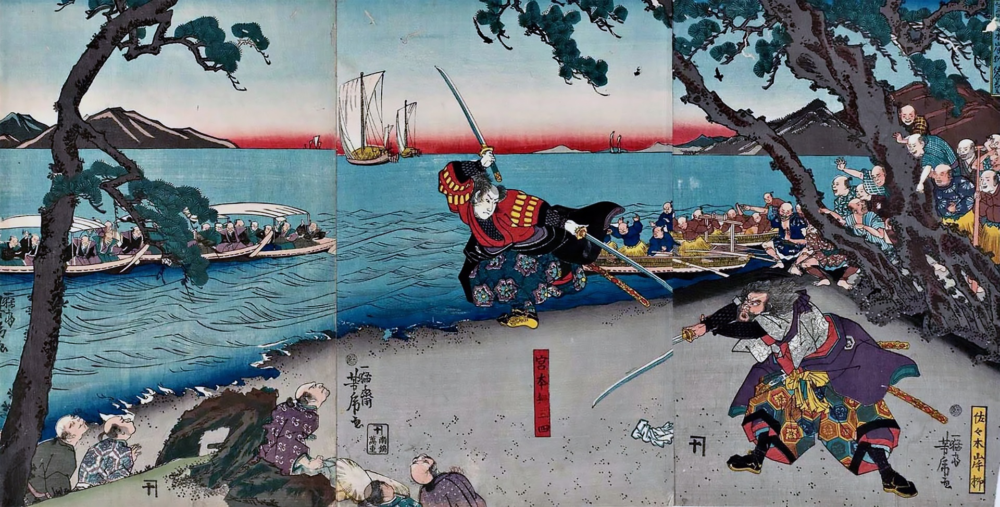

Biography
Miyamoto Musashi (宮本 武蔵, c. 1584 – 13 June 1645),[1] also known as Shinmen Takezō, Miyamoto Bennosuke or, by his Buddhist name, Niten Dōraku,[2] was a Japanese swordsman, philosopher, strategist, writer and rōnin, who became renowned through stories of his unique double-bladed swordsmanship and undefeated record in his 61 duels (next is 33 by Itō Ittōsai). Musashi, as he was often simply known, is considered a Kensei, a sword-saint of Japan.[3] He was the founder of the Niten Ichi-ryū, or Nito Ichi-ryū, style of swordsmanship, and in his final years authored The Book of Five Rings (五輪の書, Go Rin No Sho) and Dokkōdō (獨行道, The Path of Aloneness) The details of Miyamoto Musashi's early life are difficult to verify. Musashi himself simply states in The Book of Five Rings that he was born in Harima Province. Niten Ki (an early biography of Musashi) supports the assertion that Musashi was born in 1584: "[He] was born in Banshū, in Tenshō 12 [1584], the Year of the Monkey." The historian Kamiko Tadashi, commenting on Musashi's text, notes: "Munisai was Musashi's father ... he lived in Miyamoto village, in the Yoshino district [of Mimasaka Province]. Musashi was most probably born here."
Legendary Duel
The duel was scheduled for April 13, 1612, when Musashi was approximately 30 years old. The departure by boat for the duel was arranged for the Hour of the Dragon in the early morning (approximately 8:00 AM) to the island of Ganryūjima, a small isle between Honshū and Kyūshū. While Hosokawa officials banned spectators, the island was filled with them anyway. Kojirō was known for wielding an oversized nodachi (Japanese greatsword) called a "laundry-drying pole" for its length, as well as being titled "three-shaku silver blade" (「三尺の白刃」). Using this sword, Kojirō was said to be known for a swift two-stroke sword technique called tsubame gaeshi (not to confuse with the judo move of the same name, which received the name as an homage), and he bore the nickname "The Demon of the Western Provinces". Kojirō arrived at the appointed time, but was then left to wait for hours; Musashi had overslept. Kojirō sent out servants to retrieve Musashi, who ate a full breakfast, taking his time. In some variants of the tale, Musashi intentionally arrives late as a sign of disrespect. As he sailed over the Kanmon Straits, Musashi carved a crude oversized bokken from one of the ship's oars with his knife, making an improvised wooden sword, possibly to help wake himself up. Upon his arrival, an irritated Kojirō chided Musashi's lateness and dramatically threw his scabbard into the sea, as a sign that he would not stop and would fight to the death. Musashi responded with a taunt of his own, saying that Kojirō clearly wasn't confident in himself if he thought he'd never get a chance to use a fine scabbard again. Gorinto dedicated to Sasaki Kojiro in Musashi Temple (Ohara). The two circled each other, and Kojirō leaped toward Musashi with his trademark overhead strike. Musashi, too, jumped and swung his weapon with a shout, and the two sword strokes met. Musashi's headband fell off, sliced by Kojirō's sword, but somehow, only the headband was cut rather than Musashi's skull. Musashi's strike, meanwhile, had struck true, cleaving Kojirō's skull.
Video
Movie inspired by the book of Miyamoto Mushashi